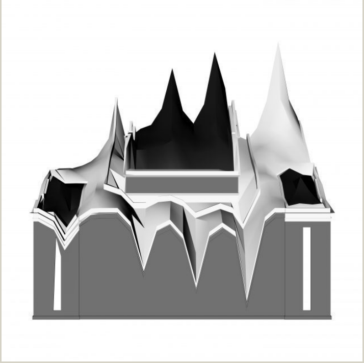
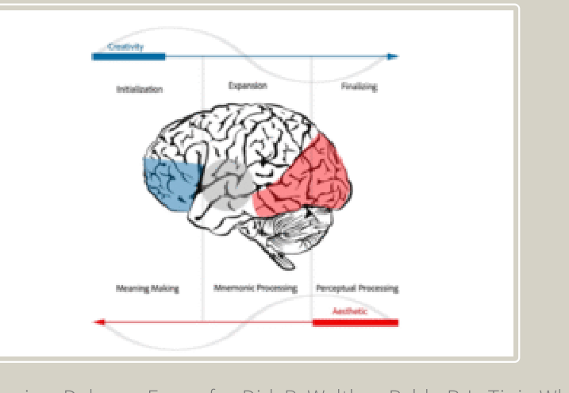
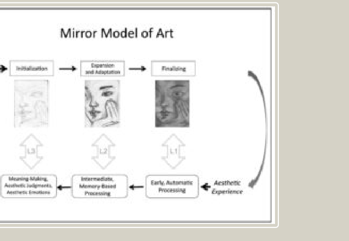
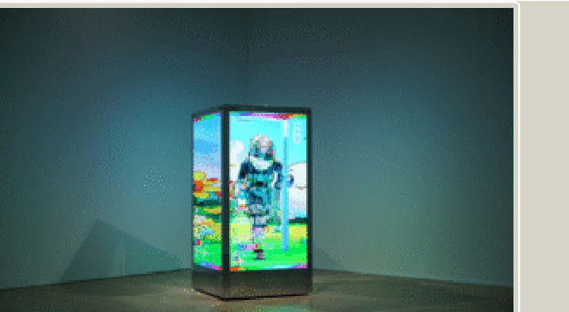
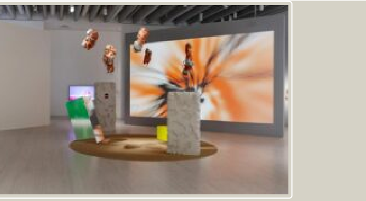

Introduction
Latency Continuum is an open-ended online exhibition proposal situated within Metasteps, an interactive virtual space. The exhibition brings together eight works by two artists, taking Georges Didi-Huberman’s understanding of the “fluid” image as its starting point: the image we see does not immediately complete its own meaning. After a period, the same image may return to thought in another form.
While the project initially focused on specific artists and their works, it gradually shifted to the relationship between vision and thought. As the curator, my true concern in this exhibition was no longer simply “what is exhibited that is relevant to the theme,” but rather “how the viewing experience occurs between artists and viewers.”
Taking this as its thread, this text critically reflects on my SICP. It begins from my experience of the Collective, using embodiment as an entry point to discuss how online and offline are different. It then analyses the formation of contemporary conditions of collective viewing and considers how the intervention of AI affects and shifts the boundaries between the identities of curator, artist and audience. The last section focuses on the Curatorial Pitch and Peer Review, reflecting on how these key stages changed my understanding of public legibility, practical feasibility and the project’s limitations. Finally, it summarises the strengths and weaknesses of this curatorial practice and points towards the areas I hope to develop further in the future.
Part 1: Embodiment of Online and Offline Spaces as Derived from Collective Experience
In the Week 6 seminar, the sharing and collaboration within the Collective not only contributed to the curatorial projects of the 404 group but brought embodied cognition reflections back to my own individual project. During the sharing, I spoke about my experience of seeing The Art of Collecting, curated by Asrin Haidari, at Moderna Museet in Stockholm, where spatial arrangement, pause, and direction guided viewers into modes of thinking through the placement of works across different media.
In the offline exhibition, this understanding of narrativity was realised through an embodied form of viewing. Audiences rely on distance, turning, obstruction, light and path to approach the work, and gradually build their understanding. As Merleau-Ponty argues, perception is not only a pure mental event but is continuously constructed through the dynamic body and environment.[1] When we considered the placement of works in In Vitro Gallery, the narrow space and architectural obstructions meant that viewers had to build relationships slowly, through hesitation and searching paths. For example, Yizhen suggested that effectively using the two walls as a closed area can set a viewing route and put a significant piece of video work about artists’ dance, as a bridge to connect both narratives. Therefore, the structure of San Zhang’s works narrative that “space — body - nonhuman” we set up was able to take shape.
This framework is almost direct in an offline environment, but when the environment becomes an interface, and the “dynamic relationship” is compressed into an immediate exchange between vision and cognition, the nature of perception shifts. The body no longer moves through space, and with it goes the kind of embodied improvisation that generates impact and imagination; what replaces them is a more direct collaboration between vision and the brain. In its place is a more direct collaboration between vision and thought, eyes scanning, the brain continuously judging and sorting. This is not simply a change of spatial form; it is a reorganisation of how viewing and the body work together.
In contemporary art, this kind of online exhibition is reorganising the interface design. Hito Steyerl’s Actual Reality OS at Serpentine did not simply place the work in an online space but required viewers to view the exhibition through an augmented reality app, which overlaid originally invisible data, social structures, and spatial conditions onto the real building through the phone interface. Serpentine’s introduction shows that what viewers face is a multimodal way of viewing, jointly formed by the app, data, virtual images, and the physical environment. [2] The work was no longer simply an object. It was a visual condition filtered, reorganised and guided by the interface.

Latency Continuum’s choice of an online platform and gesture-based operation is precisely a dialogue with the existing bodily habits of contemporary image viewers. This kind of small, embodied collaboration is already the most common way for contemporary people to view and understand meaning. We have become used to understanding images through constant scrolling, clicking, and refreshing, and images rarely really stop as a stable final “result”. This made me realise more clearly that viewing, as the sensory mode through which contemporary people most often contact information, has an important discourse power in contemporary curating, but is often overlooked in the thinking of online exhibition presentation. How can images generate thinking through delay, instead of quickly becoming a visual result to be consumed? The core mechanism of the project precisely depends on the viewer’s small actions within the interface, to trigger, compare and retain process images. If embodiments are no longer limited to bodily movement in physical space, can the online interface also become a condition for producing embodied thinking?
This is the question I will continue to ask during the project design process.
Part 2: Contemporary viewing conditions, visual experiences across different identities,
and the role of AI
Viewing through interfaces is not only a personal habit but part of a collective contemporary condition of viewing. Latency Continuum is built on the precise structure of the simultaneous presence of three identities: artists provide process images, viewers participate in generation through selection, and the curator designs the conditions in which the two meet. When everyone’s viewing begins to move in the same direction, becoming faster, more fragmented, and more immediate, the speed of image consumption increases, while the time for meaning to form becomes shorter. Latency Continuum therefore raises this question: between curator, artist, and viewer, what is the difference in the way each one views, and where do these differences begin to become similar?
The first is necessary to understand the mechanism of “viewing-creation” itself. Paul P. L. Tinio’s Mirror Model helps me interpret this kind of “viewing” as an active process of artistic creation, it shows that the viewing of painting is an active constructive process involving perception, memory, and judgement, rather than a simple reception of images. [3][4][5] In 2025, Tinio and his collaborators further verified through fMRI research that the stages of aesthetic appreciation experienced by viewers correspond to the stages of the artist’s creative cycle. [6]This means that the artist’s conceptual formation, middle exploration, and near-completion during the creative process can form a mirror relationship with the viewer’s perception, judgement, and emotional response during viewing. The three process stages in Latency Continuum are precisely an attempt to translate this correspondence into a visible interface, revealing the view from another mode of thinking and another angle.


However, this mirror relationship is now facing a new intervening actor in the contemporary context: Artificial intelligence. The intervention of AI is exposes question: whether “creation” in contemporary art no longer happens only when the artist completes the work, but begins to happen more through the organisation, selection, waiting, and judgement of the work's process by viewers with different identities.
This question has already been responded in contemporary exhibition practice. Mori Art Museum’s MACHINE LOVE brings together around fifty works using game engines, AI, and VR, exploring new aesthetic and image-generation methods through multiple datasets in digital space. [7]
Bildmuseet’s AI and the Paradox of Agency directly take the agency of AI as the central issue of the exhibition. [8] These exhibitions show that contemporary curatorial practice is actively trying to respond to the blurring boundaries between the three identities rather than simply putting works onto the website or platform.
This also has an ethical dimension of curatorial identity. In the traditional sense, the curator organises viewing through contextual construction without intervening in the work itself. But the system of Latency Continuum is more complex. It gives the viewer the double identity of viewer and indirect creator at the same time. Once the image enters the AI system, it is no longer “process”, but has a double position also. Cetinić divides two major AI types: art analysis and creative purposes. The image is both a trace of the artist’s labour and a source of material input for the digital generative mechanism. [9]
When the core mechanism of the exhibition itself is an AI interactive system designed and led by the curator, the boundary between “exhibition” and “artwork” becomes precarious, and the curator also participates in the production of visual content. The curator is at the same time the designer of the exhibition structure, the maker of the viewing path, and the builder of the AI interaction logic. The curators of Fondazione Prada once emphasised that they had no intention of marketing the myth of AI, but wanted to take “everyday images seriously as part of a rapidly evolving machinic visual culture”. [10]
Grant Kester argues that significance does not already exist in the artwork, but is gradually generated through the exchange between participants. [11]This point effectively supports this tense triangular relationship. If this premise is accepted, then what the curator does in Latency Continuum is neither only “mediation” nor only “authorship”, but is closer to designing the conditions for dialogue to take place. The boundary of this condition has made me, as a curator, remain alert to one thing throughout the whole project design process: the intervention of AI must be negotiated with the existing labour of the artists, rather than using the novelty of generation to cover it.
When technology becomes increasingly capable of compressing a complex process of making into an instantly visible result, the distinctiveness of human creation lies in a temporal way of thinking. Before the result appears, we hesitate, look back, compare, and change our judgement, and this part of the process is exactly what is most easily flattened by the interface. Process images are not supplementary explanations, but a way to let thinking return to the time before generation.


Part 3: Curatorial Pitch and Public Form Translated
The first two parts explained why my project focuses on turning “artist and artwork display” into a “viewing-creation”, while the Curatorial Pitch Presentation became the key moment urgent for me to be established in a public form. My peers strongly recognised the feasibility of the project and the value of the idea, but including my tutor, everyone agreed that my theoretical explanation of the project was relatively confused, as this concept had not yet been transformed into a perceptible structure to the audience within the exhibition itself.
Thea Visscher describes curators as mediators, arguing that mediation plays a vital role in the dissemination of art when artistic projects become complex and interdisciplinary. [12]If the core logic of the exhibition cannot be transformed so that audiences can perceive it on the interface, they will more easily understand my project as an “online installation that can generate images”. When I did a Peer Review of Xiaobao’s SCIP Endless Circulation, I saw the same difficulty again from another angle. She began from Pink Roundabout and introduced Marx's circulation of capital and Nietzsche’s eternal recurrence, building a structural logic for the project. In the curatorial sequence, the individual connection between each work and the theme was clear, but the relationship between the works was not clearly narrated through the support of the theme and theory, even though this potential arc continued to exist.
This made me rethink the double nature of disturbance in the curatorial process. The design of display methods can sometimes create cognitive resistance for audiences, and the effect of this resistance depends on whether it is reasonably framed and supported. In a curatorial context, if the resistance within an exhibition is reasonably designed, it does not block audiences from understanding. Rather than treating viewers as passive recipients, Ranciere argues for disrupting the automatic distribution of perception and opening new sensory and intellectual associations. [13]At the same time, Lachlan Dudley’s mind provides a necessary warning: when facing difficult material, audiences do not necessarily enter a reflective state naturally. [14]Some audiences may choose to leave, skip, or use “I already know these things” to keep an emotional distance because of confusion, avoiding really entering the reality behind the material. These remind me that disturbance is not better simply because it is deep. If the display structure only makes audiences feel uncomfortable or confused, without giving them enough paths to enter, then reflection may become disengagement, and audiences may replace understanding with giving up. This dilemma is especially obvious in the design of participatory exhibitions. Nina Simon emphasises that participatory structures need clear rules, purposes and support systems, and that excessive openness can also create confusion.[15] Claire Bishop also points out that participation is not always democratic, equal or liberating. [16] Arnaboldi and Diaz Lema’s research further shows that the circulation of information does not automatically equal deep participation, and that an overly complex way may instead create distance rather than bring relationships closer. [17] Therefore, the real challenge of Latency Continuum is find a point can make sense.
Weisgerber and Butler’s discussion of digital self-recording from Foucault’s hupomnemata gives digital viewing a structural arrangement with a reflective dimension. [20]Each image generated and left by an audience member is a trace left by their own understanding within the exhibition space. Macdonald and Basu’s Exhibition Experiments proposes that an exhibition is not only a container for displaying results, but can become an experimental meaning-making structure. [18] Hantelmann also points out in How to Do Things with Art that the focus of art is not only “what it expresses’, but also “what it makes happen”. [19] These traces are extensions of the curators, artists or researchers’ intention, evidence of the dialogue that has really taken place between the audience and the exhibition. Whatever audiences think of in the moment they pause within the delay, however they come to understand this process, that understanding should belong to them.
This experiment-driven approach to reading the exhibition offers an effective point of balance for Latency Continuum. The hidden relay structure already carries a trace of method, and the curatorial language translates that underlying premise into something the viewer can actually see. Once the process footage passes through the AI recombination tool, human brushwork and algorithmic rearrangement settle into a kind of suspension, and latency is precisely what sustains this middle state. The two artists’ distinct vocabularies remain recognisable within the relay rather than being absorbed into one unified narrative.The task of curatorial language is to bring audiences to that threshold, the understanding after the threshold belongs to them. The underlying awareness, the perception of the relationship between viewing, choosing, and generating, will surface in each audience member’s own way, without needing to be predetermined by curatorial assumption.
Conclusion
Through this reflection, three connected ideas have become central to Latency Continuum: viewing is not passive reception but the mechanism through which an exhibition produces its effect; digital viewing leaves traces that become part of the exhibition structure itself; and AI generation pushes viewing toward creation, opening the boundaries between curator, viewer, and creator to reconsideration.
This process has also clarified two responsibilities. First, curatorial language must be translatable into perceivable experience, as a theoretically valid framework means little if it cannot be felt through the interface. Second, when an exhibition depends on specific technological conditions, accessibility becomes a curatorial position rather than an afterthought. Working within the Collective further reinforced that curating is not the production of an individual concept but a collective practice in which division of labour and dialogue are themselves generative.
A larger question remains: when viewing increasingly depends on systems and interfaces, how can curators ensure that viewing not only operates within the system, but is also capable of questioning it?
References
The reference list is cut off at the right edge in the supplied PDF. The visible text is retained below; missing endings have not been reconstructed.
Maurice Merleau-Ponty,Phenomenology of Perception, trans. Donald A. Landes (London and New York: Routledge, 2012)
Serpentine Galleries, “Hito Steyerl: Actual Reality OS,” exhibition page, online, April 11, 2019-January 31, 2020,
Tinio, Pablo P. L. “From Artistic Creation to Aesthetic Reception: The Mirror Model of Art.” Psychology of Aesthet
Chatterjee, Anjan. “Neuroaesthetics: A Coming of Age Story.” Journal of Cognitive Neuroscience 23, no. 1 (2011): £
Vartanian, Oshin, Delaram Farzanfar, Dirk B. Walther, and Pablo P. L. Tinio. “Where Creativity Meets Aesthetics: 1
Oshin Vartanian, Delaram Farzanfar, Dirk B. Walther, Pablo P. L. Tinio, Where creativity meets aesthetics: The Mii
Mori Art Museum, “MACHINE LOVE: Video Game, AI and Contemporary Art,” exhibition page, February 13-June 8, 2025, ¢
Bildmuseet, “AI and the Paradox of Agency,” exhibition page, March 13, 2026-January 17, 2027, accessed April 25, Z
Cetinic¢, Eva, and James She. “Understanding and Creating Art with AI: Review and Outlook.” ACM Transactions on Mu.
Fondazione Prada, “Training Humans, an Exhibition by Kate Crawford and Trevor Paglen, at Osservatorio Fondazione
Kester, Grant H. Conversation Pieces: Community and Communication in Modern Art. Berkeley: University of Califorr
Thea, Carolee. On Curating: Interviews with Ten International Curators. New York: D.A.P., 2009.
Jacques Ranciére, The Emancipated Spectator, trans. Gregory Elliott (London: Verso, 2009), 13.
Lachlan Dudley, “‘I Think I Know a Little Bit about That Anyway, So It’s Okay’: Museum Visitor Strategies for Dis
Nina Simon, The Participatory Museum (Santa Cruz, CA: Museum 2.0, 2010), chap. 1, “Principles of Participation,”
Bishop, Claire. Artificial Hells: Participatory Art and the Politics of Spectatorship. London: Verso, 2012.
Arnaboldi, Michela, and Melisa L. Diaz Lema. “The Participatory Turn in Museums: The Online Facet.” Poetics 89 (i
Macdonald, Sharon, and Paul Basu, eds. Exhibition Experiments. Malden, MA: Blackwell, 2007. https://doi.org/10.1¢
Hantelmann, Dorothea von. How to Do Things with Art: The Meaning of Art’s Performativity. Zurich: JRP Ringier, 2(
Corinne Weisgerber and Shannan H. Butler, “Curating the Soul: Foucault’s Concept of Hupomnemata and the Digital 1